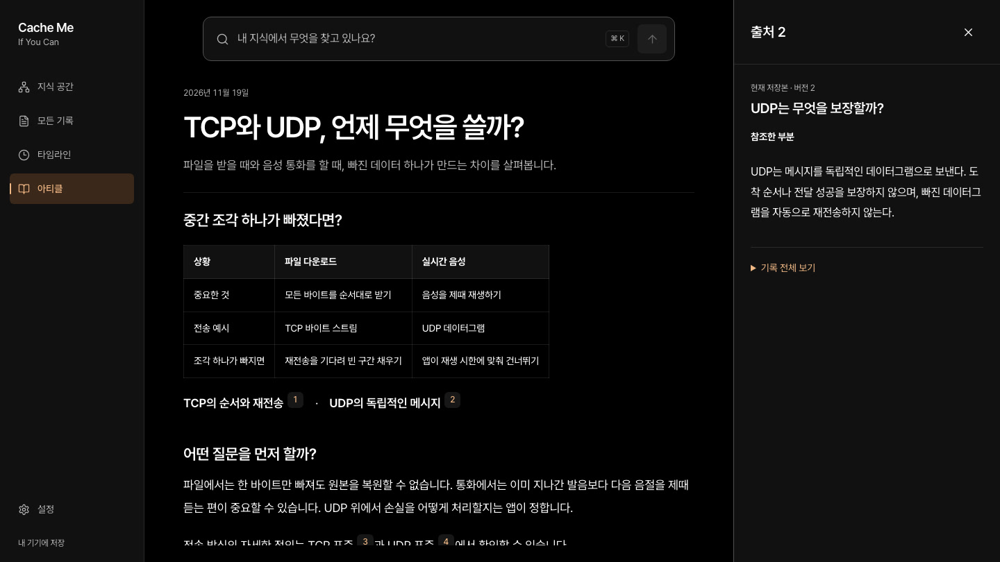

개인 기록
최근 기록과 제목은 capture_list, 의미 검색은 knowledge_search, 답변용 근거는 knowledge_context로 찾는다. 인용 전 SourceRef로 실제 저장 버전과 구간을 확인한다. 사용자 진술, 실제 결과, 제안과 해석을 구별한다.
설계 문서 / Codex 스킬
cache-me는 사용자가 지정한 내용을 기록으로 관리하고, cache-me-article은 근거를 엮어 독립된 학습 글을 발행한다. 두 스킬은 Codex가 읽는 지침이고, 실제 저장은 로컬 서버가 담당한다.
 편집 가능한 도식 내려받기
편집 가능한 도식 내려받기
cache_me MCP가 내 로컬 서버와 연결되어야 조회·저장할 수 있다.capture_list로 찾을 수 있다.cache-merequest_id(UUID)와 body_markdown이다. 제목·유형·주제 후보·출처는 필요할 때 덧붙인다.capture_create를 호출한다. 반환된 capture에서 실제 제목·본문·메타데이터를 보여 준다. ‘모든 기록’에서 바로 열 수 있고, 뒤이어 주제 연결과 색인 작업이 진행된다.cache-me-articlerequest_id, title, 한 줄 summary, body_markdown, 순서 있는 citations다. topics는 선택 사항이다.knowledge_context로 후보를 찾고 source_get으로 인용할 구간을 읽는다. 비교 조건은 표, 순서는 단계 도식, 수치의 크기나 구성은 차트로 정리한다. 필요한 곳에는 확인한 원문과 설명용 예시를 보강한다.article_create로 글과 인용을 한 번에 등록한다. 성공 응답의 요청 ID와 저장된 article을 확인하고 제목 링크와 한 줄 요약을 돌려준다. 완성된 글은 ‘아티클’에서 읽고 원자료는 기존 기록으로 유지한다.최근 기록과 제목은 capture_list, 의미 검색은 knowledge_search, 답변용 근거는 knowledge_context로 찾는다. 인용 전 SourceRef로 실제 저장 버전과 구간을 확인한다. 사용자 진술, 실제 결과, 제안과 해석을 구별한다.
버전별 동작·수치·연구 결과는 공식 문서, 표준이나 원 논문의 해당 부분을 읽는다. 검색어는 개념과 제품명으로 만들고 개인 기록의 사적인 문구와 식별자는 제외한다. 측정값에는 출처를, 만든 사례에는 ‘설명용 예시’를 표시한다.
아티클의 번호는 처음 인용한 순서를 따른다. 기록 인용에는 읽은 SourceRef, 외부 인용에는 제목·URL·참고 요지가 담긴다. 독자가 [1]을 열면 현재 글의 읽기 위치에서 근거를 확인할 수 있다.
‘초안만’이면 표·번호 목록·확인한 출처를 대화에 표시하고 쓰기 도구를 호출하지 않는다. 등록을 요청하면 웹용 차트와 번호 인용으로 글을 완성해 article_create를 호출한다.
기록은 capture_get으로 현재 기록 버전과 상태 버전을 읽고 capture_update에 두 기대 버전을 전달한다. ‘완료로’만 요청하면 완료 상태만 변경한다.
아티클은 article_get으로 현재 글을 읽고 article_update에 기대 버전과 수정한 글·인용 전체를 보낸다. 버전이 충돌하면 최신본을 다시 읽고 겹치는 수정의 의도를 확인한다.
대상을 읽은 뒤 capture_delete_prepare로 미리보기를 만든다. capture_delete가 클라이언트에 띄운 확인을 사용자가 승인해야 소프트 삭제된다. 취소·거부·확인 미지원·만료 시 기록은 유지된다. 아티클 도구의 작업 범위는 등록·목록·조회·수정이다.
기록 두 건 중 한 건만 저장되면 성공 항목과 미완료 항목을 따로 알린다. 응답 유실로 저장 여부가 불분명하면 같은 요청 ID와 같은 입력으로 재시도한다. 이전 커밋 영수증만 있고 현재 기록을 읽을 수 없으면 그 상태를 안내한다.
MCP 연결 실패는 설치된 스킬의 runtime.json에 있는 진단 명령으로 확인한다. 아티클 작성 중 관련 기록이 없는 경우는 검증한 외부 원문으로 진행할 수 있고, 연결에 실패한 경우에는 글·출처와 저장 확인 상태를 대화에 남긴다.
“방금 배운 TCP와 UDP, 각각 캐시미 해줘.”
cache-me나중에 따로 찾도록 TCP와 UDP를 각각 정리합니다.
capture_create두 기록의 제목과 본문을 한 건씩 저장합니다.

주제가 연결되면 지식 공간에서도 두 기록을 찾을 수 있습니다.
“그 두 기록으로 TCP와 UDP 비교 아티클을 써줘.”
cache-me-article관련 기록을 읽고 비교표와 출처가 있는 글을 씁니다.
article_create완성한 글과 인용을 아티클 한 편으로 등록합니다.

Codex가 돌려준 글 링크를 열면, 읽던 자리에서 인용을 펼칠 수 있습니다.